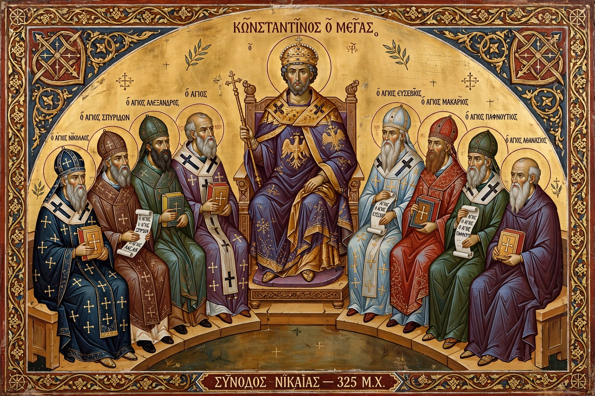

The First Council of Nicaea was a council of Christian bishops convened in Nicaea in Bithynia (present-day İznik, Turkey) by the Roman emperor Constantine I in AD 325. It was the first ecumenical council of the Christian Church, and is best known for producing the Nicene Creed and for its condemnation of Arianism.
The council was called principally to resolve the controversy raised by Arius, a presbyter of Alexandria, who taught that the Son of God was a created being, subordinate to the Father — "there was a time when he was not." Alexander, bishop of Alexandria, and his deacon Athanasius opposed this teaching. Constantine, who had recently become sole emperor, sought a unified settlement to preserve the peace of the empire and invited bishops from across the Roman world; tradition gives the number of attendees as 318, though contemporary lists suggest around 250–300, overwhelmingly from the Greek-speaking East.
The council adopted a creed affirming that the Son is homoousios ("of one substance") with the Father and "begotten, not made," and appended anathemas against Arian propositions. Arius and two bishops who refused to sign were exiled. The council also issued twenty canons on church discipline, settled the date of Easter — decreeing it be celebrated on a Sunday independent of the Jewish Passover calendar — and addressed the Meletian schism in Egypt.
The settlement did not end the conflict: Arian and semi-Arian parties regained imperial favour under Constantine's successors, and Athanasius was exiled five times. The Nicene faith was re-affirmed and its creed expanded at the First Council of Constantinople in 381. The council's creed remains central to most Christian denominations today.
See also: Battle of the Milvian Bridge · Arianism